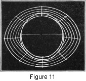

1930—Millinery Processes
by Carlotta M. Brown
BLOCKS AND BLOCKING
Brims and crowns are often shaped over some kind of block. The commercial cork blocks and aluminum steaming blocks are the most convenient; but many who are interested in millinery do not care to invest in these. Blocks may be made that are very good substitutes.
Crown Blocks of Plaster of Paris and of Wood
Select a crown with correct head-size measurement. Melt a small quantity of paraffin and coat the inside of the crown; sink the crown, top downward, into a pan of earth; mix a quantity of plaster of Paris with water, and pour it into the crown.
Blocks of soft wood may be made to head-size measurement by any carpenter.
Fabric Crown wired for Block
Select a substantial crown with correct head-size measurement. Cut four lengths of frame wire, following the exact lines of the crown plus 1 inch at each end of the wire for turning, one length to reach from the center front to the center back of the crown, and a second to reach from the right to the left side of the crown. Place both lengths on the inside of the crown and sew them securely into place with the long-and-short stitch, the short stitch holding the wire and the long stitch running along the outside of the crown (Fig. 10). These wires have divided the crown into quarters. For extra bracing, place the two remaining lengths of wire at the eighths of the crown and sew in the same manner as the first two wires. The 1-inch turning at each edge is bent parallel to the base of the crown and sewed securely. After these are all fastened run circular wires half an inch apart on the inside of the crown until it is filled, lapping the wires 2 inches at the center back. To give added strength to the base of the crown, place two wires with a 2-inch turning allowance across the crown from front to back and from side to side. Turn 1 inch at each end of the wire parallel to the base of the crown, and sew with the lock stitch (Fig. 3).
Wire Brim for Blocking
Wire brims are used for blocking when many copies of the same brim are desired. The brim used for blocking differs from the wire brim used for the transparent hat by having a series of reenforcing wires filling the brim instead of only one. The reenforcing wires are half an inch apart and are always placed on the facing side of the brim, for all blocking is done from that side. The two head-size circles and the circumference circle are made of heavy cable wire; the rest of the block is made of frame wire. The purpose of the heavy circles is to keep the frame from drawing out of shape as the dampened material dries and shrinks. The construction process is the same as for the ordinary wire frame (see Wire Frames). A piece of tie wire should be placed across the head size from the right to the left side before stretching material for blocking, the bracing of the wire keeping the head size unaltered (Fig. 11).
The frame materials generally used for blocking are willow, crinoline, and flexible net. These materials are sized and become sticky when dampened, making them difficult to handle. When blocking light-weight materials two thicknesses may be used.
Blocking over a Cork Block
Measure the length of the crown from the center front over the top to the center back, and in the same way measure the width of the crown from the side centers. The piece cut will be slightly longer than wide; the front and the back will run on the straight thread of the material. Determine the center front, the center back, and the center sides of the strip and adjust to the corresponding crown centers. In drawing the material over the block do not permit gathers to collect in front, at sides, or at back; instead, pull the fullness out at the bias points, distributing it carefully and pinning the material into place where it lies (Fig. 12). After the pinning is finished, hold the block over a kettle of boiling water, and steam. As the material becomes moistened with steam, draw the bias points downward, stretch out all possible fullness, and pin into place again. Repeat this process until all fullness has been pulled out at the bias points and a perfectly smooth crown results. Set the block aside until the crown is thoroughly dry and then trim the surplus material from the bottom of the crown block.
One great advantage of the cork block is that the pins may be inserted into the block itself when the material is being adjusted. In using wood, aluminum, or other solid blocks which pins will not penetrate, it is necessary to substitute a tightly drawn band of tape or a rubber around the bottom. The planning, measuring, and adjusting are the same as in cork-blocking.
Blocking over a Wire-brim Block
Place the frame material on the wire block to determine the size, allowing a generous amount at the edge for turning; and cut. Put the material on a flat surface and dampen thoroughly, using a sponge or wet cloth. If the heavier frame materials are used, they may be dampened on both sides because of their weight. Never immerse the material or hold it under the faucet, for just enough moisture is needed to aid the flexibility. Never wring the material, for this will break and crush the fabric. The well-dampened material is now placed on the wire block, the straight thread of the material at the front. Pin the material to the block in front, and work in both directions from the front toward the back, lapping the edge of the material over the circumference wire, and pin into place. Insert the pins about 2 inches apart under the outer wire, with the heads to the outside. Match each pin with one placed at an equal distance from the center on each side. Pins are also placed at the head size directly opposite the outer pins to hold the material at that point. Repeat this until the entire covering is smoothly adjusted. The pinning and stretching must be carefully done to insure an exact reproduction of the wire block. Any surplus material is to be taken out at the back, the amount varying according to the upward or downward curve of the brim. Allow 1 inch for back-lapping. The next step is to cut an opening at the head size. Allow 2 inches from the lower head-size wire, and cut. Slash this 2 inches of material downward toward the head size at intervals of 1 inch, bringing each tab into place over the top head-size wire, and pin (Fig. 13). Remove the temporary head-size pins. Put the frame in a warm place to dry, and when dry remove all the pins except those holding the seam-lapping at the back. As the material dries, it stiffens. The material which was folded over the edge should be trimmed close to the wire line at the circumference and the upper head-size oval. Then the model may be slipped from the block. Trim all rough edges so that a perfectly smooth outside line results. Wire and bind (Fig. 3).
If the frame requires pressing when finished, run the iron over the dry brim. Pad all extreme curves before this pressing is done.